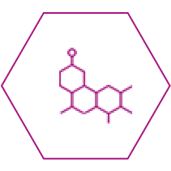

Троксевазин® капсулы — проверенное временем1 средство
Воздействует на симптомы варикоза*
и хронического геморроя изнутри2
Помогает справляться с симптомами2
при геморрое и варикозе
-

Хронической
венозной
недостаточности -
Трофических
язвах -
Склеротерапии
вен -
Геморрое
Капсулы Троксевазин®
Действуют изнутри, способствуют уреплению сосудов
и улучшению микроциркуляции1
- 
Производится
в Европе1 -
Достигнутый эффект может сохраняться не менее 4 недель1
-
Курс лечения в среднем – 3-4 недели1
-
Обладает выгодной ценой6
Экономьте7 при покупке большой упаковки
Как использовать капсулы Троксевазин® при хронической венозной недостаточности и геморрое?1
На начальном этапе
1 капсула
в зависимости от тяжести симптомов
При повторном возникновении симптомов
Возобновить лечение в той же дозе или снизить дозу до 1 капсулы 2 раза в день
Как применять при беременности3
Гель может быть использован в II и III триместрах беременности, если ожидаемая польза для мамы выше, чем потенциальный риск для ребенка.
Перед применением препарата беременным обязательно нужно проконсультироваться с врачом.
Используйте комплексный подход — воздействуя на симптомы варикоза* не только изнутри, но и снаружи

Узнайте больше о
Троксевазин® Гель 2 % —
выгодная цена3,
европейское производство1
Узнайте больше о
Троксевазин® НЕО —
гель с усиленной*** трехкомпонентной формулой5
Инструкция по медицинскому применению капсул Троксевазин®
Регистрационный номер
Торговое наименование препарата
Международное непатентованное наименование
Способ применения и дозы
Побочное действие
Передозировка
Узнайте больше о варикозе

Симптомы варикоза
Посмотрим на статистику: по данным исследователей, большая часть пациентов до обращения к специалисту по проблемам с венами, флебологу, имела опыт...
Анализы при варикозе
Посмотрим на статистику: по данным исследователей, большая часть пациентов до обращения к специалисту по проблемам с венами, флебологу, имела опыт...
Кратко о варикозе
Посмотрим на статистику: по данным исследователей, большая часть пациентов до обращения к специалисту по проблемам с венами, флебологу, имела опыт...
* Хронической венозной недостаточности
** По сравнению с Троксевазин® гелем 2%
1. Троксевазин® используется в России с 1981 г. РУ Б-8-242 №2654
2. Инструкция по медицинскому применению лекарственного препарата Троксевазин® капсулы ЛП-№ (000083)-(РГ-RU)
3. По сравнению с другими популярными гелями. Розничные цены Февраль 2022, IQVIA: Троксевазин® гель 2 % 40 гр – 313,65, Лиотон гель 30 гр – 551.11, Детрагель 40г – 645,65, Венолайф гель 40г- 520.35, Флебодиа крем-гель 50 мл – 681 руб, Венарус гель 40 г – 612 руб, Ангиорус гель 60 мл – 433 руб (по данным на сайте apteka.ru, доступ – 12.04.2022.
4. Инструкция по медицинскому применению лекарственного препарата Троксевазин® Гель 2% П N012713/02
5. Инструкция по медицинскому применению лекарственного препарата Троксевазин® Нео ЛП-002139
6. По сравнению с лидерами рынка венотоников для системного применения. Согласно данным базы «АЙКЬЮВИА Солюшнс» «Розничный аудит ГЛС и БАД в РФ», продажи в рублях в категории «Препараты, снижающие проницаемость капилляров» в виде твердых лекарственных форм; средние розничные цены в рублях в пересчете на 1 таблетку/капсулу в январе 2020 г.
7. По сравнению с упаковкой 50 капсул.